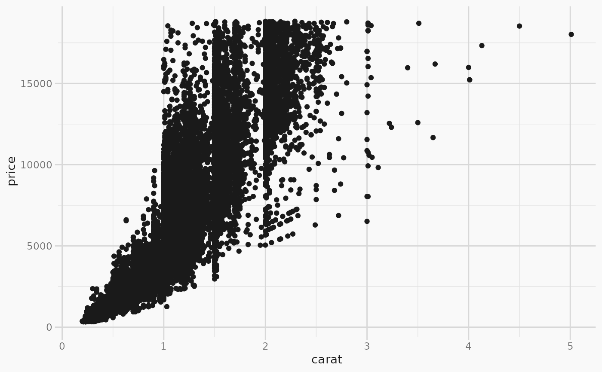

Create a ggplot2 theme using explicit colors or by automatically extracting colors from a brand.yml file.
Usage
theme_brand_ggplot2(
brand = NULL,
background = NULL,
foreground = NULL,
accent = NULL,
...,
base_size = 11,
title_size = base_size * 1.2,
title_color = NULL,
line_color = NULL,
rect_fill = NULL,
text_color = NULL,
plot_background_fill = NULL,
panel_background_fill = NULL,
panel_grid_major_color = NULL,
panel_grid_minor_color = NULL,
axis_text_color = NULL,
plot_caption_color = NULL
)Arguments
- brand
One of:
NULL(default): Automatically detect and read a _brand.yml fileA path to a brand.yml file or directory containing _brand.yml
A brand object (as returned by
read_brand_yml()oras_brand_yml())FALSE: Don't use a brand file; explicit colors must be provided
- background
The background color, defaults to
brand.color.background. If provided directly, this value can be a valid R color or the name of a color inbrand.colororbrand.color.palette.- foreground
The foreground color, defaults to
brand.color.foreground. If provided directly, this value can be a valid R color or the name of a color inbrand.colororbrand.color.palette.- accent
The accent color, defaults to
brand.color.primaryorbrand.color.palette.accent. If provided directly, this value can be a valid R color or the name of a color inbrand.colororbrand.color.palette.- ...
Reserved for future use.
- base_size
Base font size in points. Used for the
sizeproperty ofggplot2::element_text()in thetexttheme element.- title_size
Title font size in points. Used for the
sizeproperty ofggplot2::element_text()in thetitletheme element. Defaults tobase_size * 1.2.- title_color,
Color for the
colorproperty ofggplot2::element_text()in thetitletheme element. Can be a valid R color or the name of a color inbrand.colororbrand.color.palette. If not provided, defaults to theforegroundcolor.- line_color
Color for the
colorproperty ofggplot2::element_line()in thelinetheme element. Can be a valid R color or the name of a color inbrand.colororbrand.color.palette. If not provided, defaults to a blend of foreground and background colors.- rect_fill
Fill color for the
fillproperty ofggplot2::element_rect()in therecttheme element. Can be a valid R color or the name of a color inbrand.colororbrand.color.palette. If not provided, defaults to the background color.- text_color
Color for the
colorproperty ofggplot2::element_text()in thetexttheme element. Can be a valid R color or the name of a color inbrand.colororbrand.color.palette. If not provided, defaults to a blend of foreground and background colors.- plot_background_fill
Fill color for the
fillproperty ofggplot2::element_rect()in theplot.backgroundtheme element. Can be a valid R color or the name of a color inbrand.colororbrand.color.palette. If not provided, defaults to the background color.- panel_background_fill
Fill color for the
fillproperty ofggplot2::element_rect()in thepanel.backgroundtheme element. Can be a valid R color or the name of a color inbrand.colororbrand.color.palette. If not provided, defaults to the background color.- panel_grid_major_color
Color for the
colorproperty ofggplot2::element_line()in thepanel.grid.majortheme element. Can be a valid R color or the name of a color inbrand.colororbrand.color.palette. If not provided, defaults to a blend of foreground and background colors.- panel_grid_minor_color
Color for the
colorproperty ofggplot2::element_line()in thepanel.grid.minortheme element. Can be a valid R color or the name of a color inbrand.colororbrand.color.palette. If not provided, defaults to a blend of foreground and background colors.- axis_text_color
Color for the
colorproperty ofggplot2::element_text()in theaxis.texttheme element. Can be a valid R color or the name of a color inbrand.colororbrand.color.palette. If not provided, defaults to a blend of foreground and background colors.- plot_caption_color
Color for the
colorproperty ofggplot2::element_text()in theplot.captiontheme element. Can be a valid R color or the name of a color inbrand.colororbrand.color.palette. If not provided, defaults to a blend of foreground and background colors.
Value
A ggplot2::theme() object.
Branded Theming
The theme_brand_* functions can be used in two ways:
With a brand.yml file: The
theme_brand_*functions useread_brand_yml()to automatically detect and use a_brand.ymlfile in your current project. You can also explicitly pass a path to a brand.yml file or a brand object (as returned byread_brand_yml()or created withas_brand_yml()). When abrandis provided, the theme functions will use the colors defined in the brand file automatically.With explicit colors: You can directly provide colors to override the default brand colors, or you can use
brand = FALSEto ignore any project_brand.ymlfiles and only use the explicitly provided colors.
See also
Other branded theming functions:
theme_brand_flextable(),
theme_brand_gt(),
theme_brand_plotly(),
theme_brand_thematic()
Examples
brand <- as_brand_yml('
color:
palette:
black: "#1A1A1A"
white: "#F9F9F9"
orange: "#FF6F20"
foreground: black
background: white
primary: orange')
library(ggplot2)
ggplot(diamonds, aes(carat, price)) +
geom_point() +
theme_brand_ggplot2(brand)
